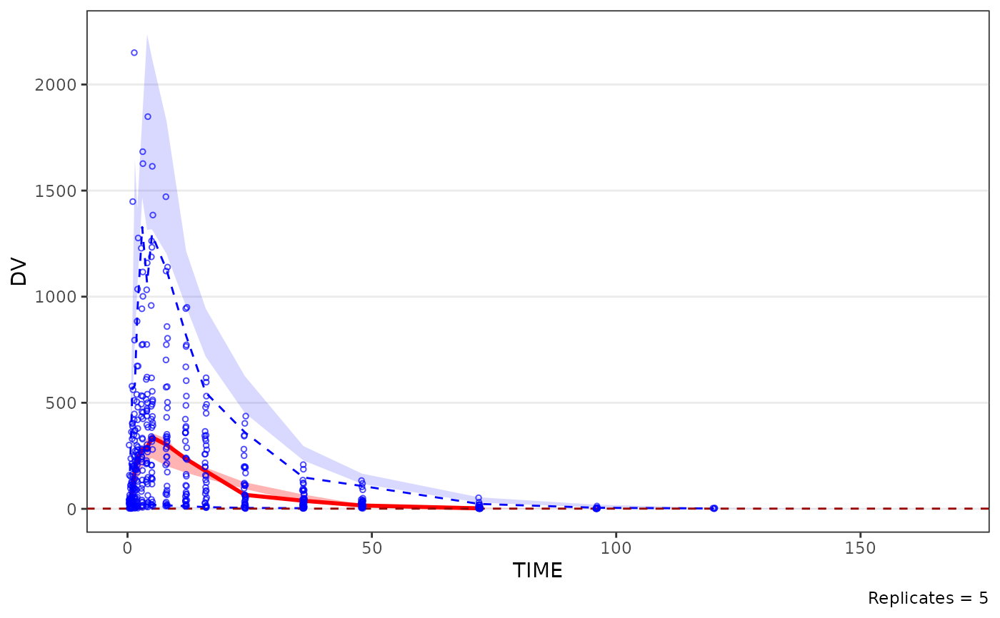
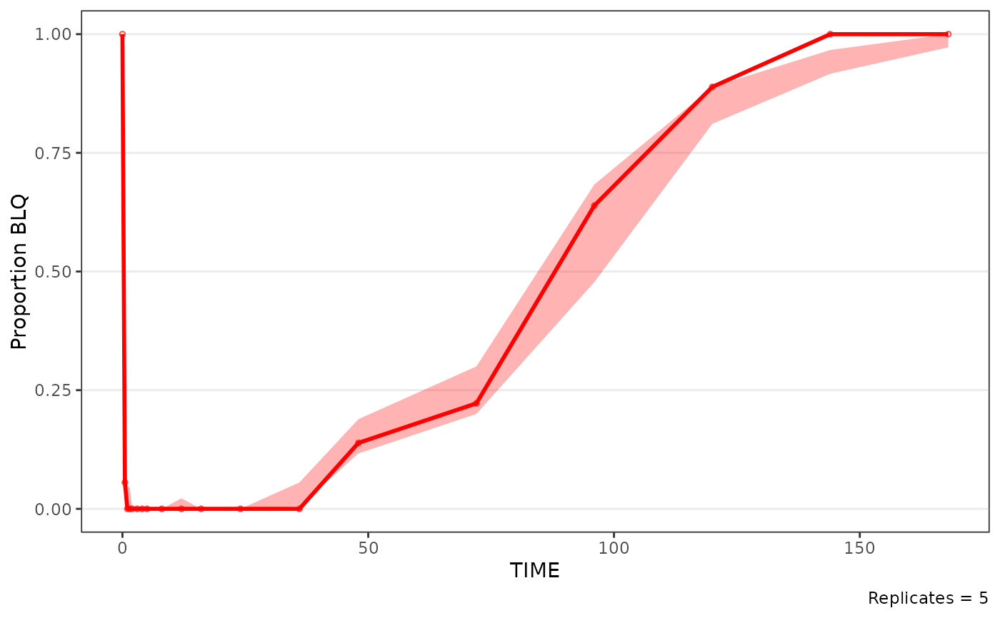
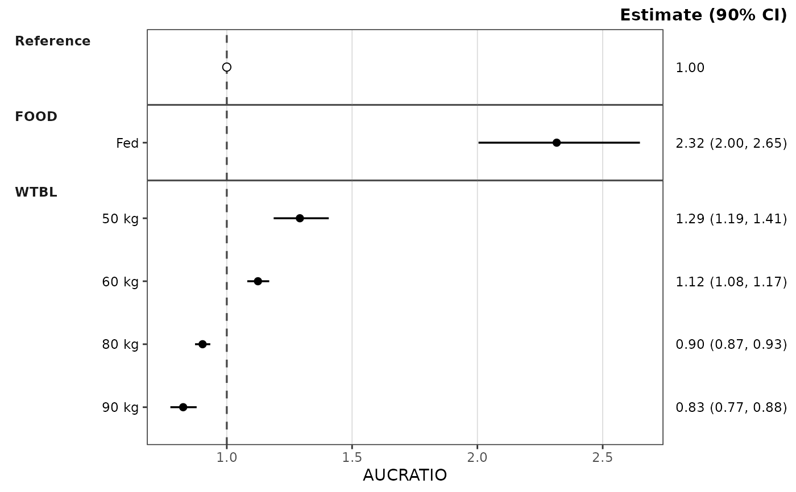

autoplot() methods for the cacheable stats containers. Each one calls the
container's builder with every other argument passed through:
vpc_stats(df_vpcstats()):plot_build_vpc(), e.g.autoplot(stats, type = "cens")orautoplot(stats, pcvpc = TRUE).loqstill defaults fromstats$config$loqunless passed.doseprop_stats(df_doseprop()):plot_build_doseprop().forest_stats(df_forest()):plot_build_forest(); passmetricwhen the container holds several metrics.
Errors are reported by the builder (e.g. Error in `plot_build_vpc()` ).
autoplot() is re-exported from ggplot2, so it is available under
library(pmxhelpr) alone.
Examples
model <- model_mread_load(model = "pkmodel")
#> Building pkmodel_cpp ...
#> done.
simout <- df_mrgsim_replicate(data = dplyr::filter(data_sad, CMT %in% c(1, 2)),
model = model, replicates = 5,
dv_var = ODV)
vs <- df_vpcstats(simout, loq = 1)
autoplot(vs)
#> Warning: Removed 5 rows containing missing values or values outside the scale range
#> (`geom_line()`).
#> Warning: Removed 8 rows containing missing values or values outside the scale range
#> (`geom_line()`).
#> Warning: Removed 3 rows containing missing values or values outside the scale range
#> (`geom_line()`).

autoplot(vs, type = "cens")

autoplot(df_forest(data_sad_pkforest), metric = "AUCRATIO")
